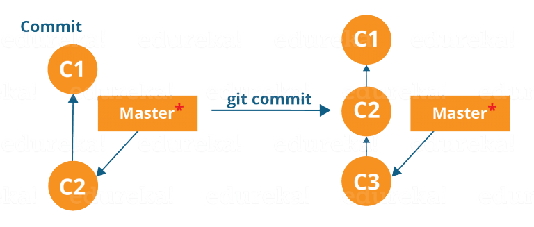
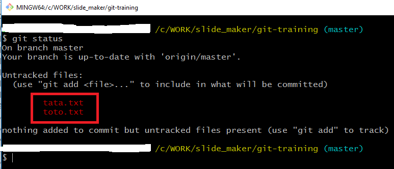
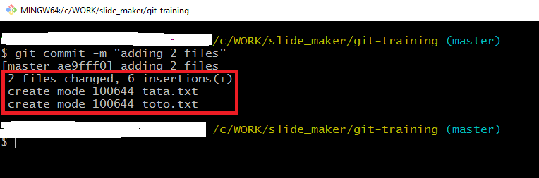
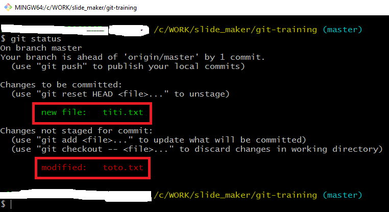
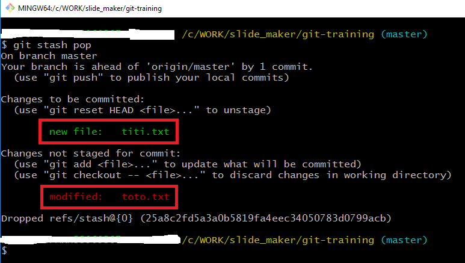
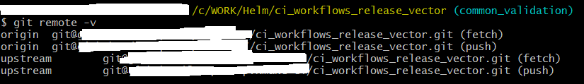
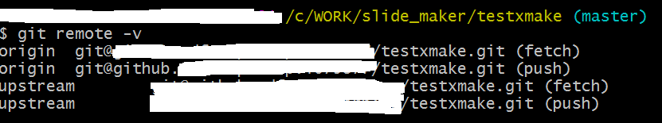
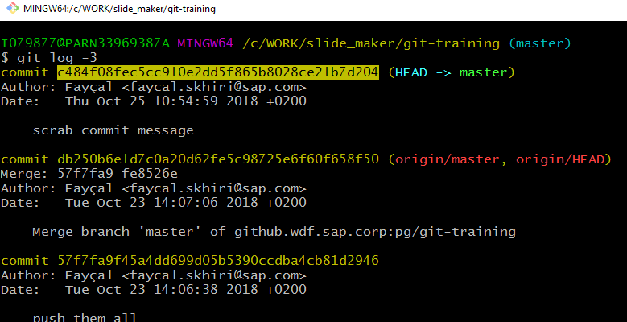

What is Git
Git is a distributed version-control system for tracking changes in computer files and coordinating work on those files among multiple people
When Git is created
Git was created by Linus Torvalds in 2005 for development of the Linux kernel Current maintainer since 2005 is Junio Hamano.
Distributed vs Centralized Developement

Source Atlassian
Basic Workflow
 source uidaholib.github.io
source uidaholib.github.io
Saving Changes
git add
git commit
git stash
git add
Adds a change in the working directory to the staging area. It tells Git that you want to include updates to a particular file in the next commit.
However, git add doesn't really affect the repository in any significant way—changes are not actually recorded until you run git commit.
git commit
Git commit refers to recording snapshots of the local repository at a given time (but not in the remote repository yet !)
Committed snapshots will never change unless done explicitly

Demonstration


git stash
It takes your uncommitted changes (both staged and unstaged), saves them away for later use.
However, git add doesn't really affect the repository in any significant way—changes are not actually recorded until you run git commit.
Demonstration
Stashing your work

Applying your stashed changes

Collaborating
git push
git fetch
git pull
git remote
git push
git push <remote> <branch>
The git push command is used to upload local repository content to a remote repository.
Pushing is how you transfer commits from your local repository to a remote repo.
Warning !
To prevent you from overwriting commits, Git won’t let you push when it results in a non-fast-forward merge in the destination repository.
If git push fails, you need to pull changes first
git pull <remote> <branch>
git push <remote> --force
This will force the push even if it results in a non-fast-forward merge.
Do not use the --force flag unless you’re absolutely sure you know what you’re doing.
Before and after pushing
git fetch
git fetch <remote> <branch>
The git fetch command downloads changes from a remote repository into your local repo
Git ftech doesn't integrate any of this new changes into your working files.
git pull
git pull <remote> <branch>
Incorporates changes from a remote repository into the current working files, git pull is shorthand for git fetch followed by git merge
Meaning that pull not only downloads new data; it also directly integrates it into your current working directory
fetch vs pull

git remote
The git remote command lets you create, view, and delete connections to remote repositories Remote connections are more like bookmarks rather than direct links into other repositories.
The git remote command is essentially an interface for managing a list of remote entries that are stored in the repository's ./.git/config file.

Creating git remote configuration
git remote add <name> <url>

Undo Changes
Undoing the last commit
In case you don't need to remove the last commit. but you need only to change it. Then do more changes and when you are done do "git commit --amend" The new changes will be added to the amended commit


Undoing local commit
Let's say I committed locally, but now want to remove that commit.
git reset
--soft reset only HEAD
--mixed reset HEAD and index
--hard reset HEAD, index and working tree
Exercice
mkdir git_reset_demo
cd git_reset_demo
git init .
touch toto.txt
git add toto.txt
git commit -m"initial commit"
do more commits
experience git reset with different options
...
Undoing public commit
If you have already made your commits public, you will want to create a new commit which will "revert" the changes you made in your previous commit (current HEAD).
git revert HEAD
Your changes will now be reverted and ready for you to commit:

Exercice
mkdir git_revert_demo
cd git_revert_demo
git init .
touch toto.txt
git add toto.txt
git commit -m"initial commit"
do more commits
do git revert HEAD
...
Merging vs Rebasing
The merge option
If you want to merge the master branch into the feature
git checkout feature
git merge master
Or
git merge master feature
The rebase option
You can rebase the feature branch onto the master branch by doing the following:
git checkout feature
git rebase master
Conclusion
The safest way is to use always merge rather than rebase.
Rebasing can be dangerous! Rewriting history of shared branches is prone to team work breakage
Rebase Forked Repository
Create your upstream with remote command (add link to remote slide)
git fetch upstream
git checkout master
git merge upstream/master
In Depth
- Merge vs Rebase
- Log, Diff
- Rebase Forked Repository